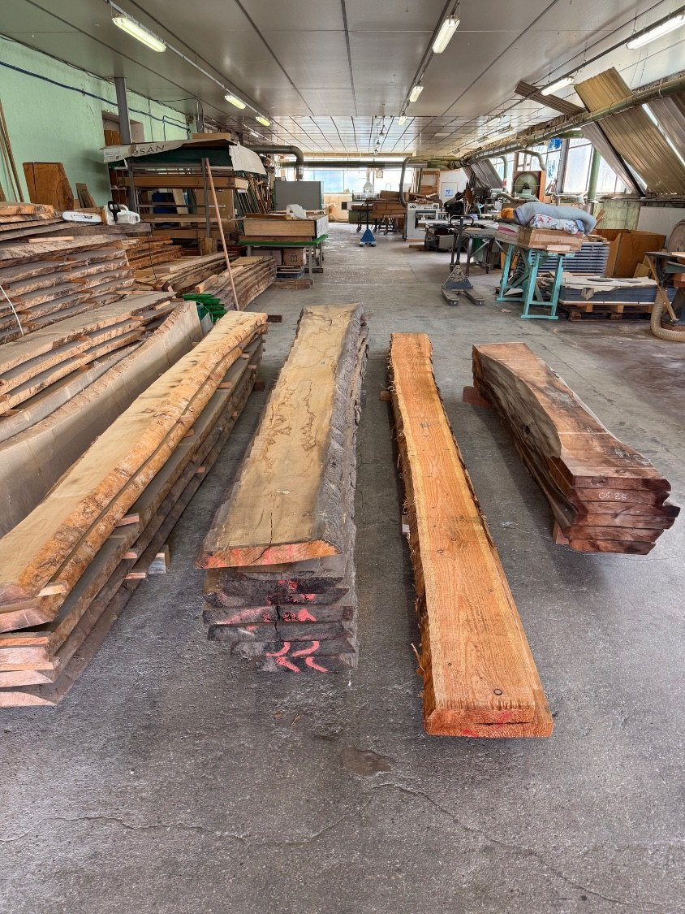
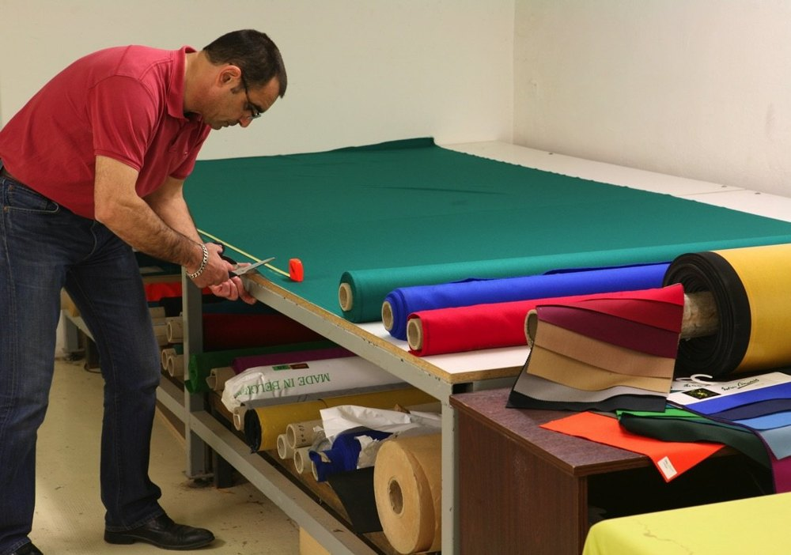

01
La noblesse du bois brut
Tout part du tronc d'arbre. Chêne, érable et noyer français, ou mélèze, sont choisis en plateaux bruts pour leur veinage, puis travaillés en massif.

02
Du bois au billard brut
Un seul ébéniste débite, assemble et ajuste chaque pièce à la main. Le cadre, les pieds et le châssis prennent forme : votre billard existe, encore brut.

03
Des finitions à votre image
Teinte, laque, liserés, repères : chaque finition suit vos choix. La laque est appliquée dans une cabine dédiée, dans la couleur que vous avez retenue.

04
Le drap, dernière étape
Le drap est coupé puis tendu à la main. Habillé et réglé, votre billard est prêt à prendre place chez vous et à donner son caractère à la pièce.